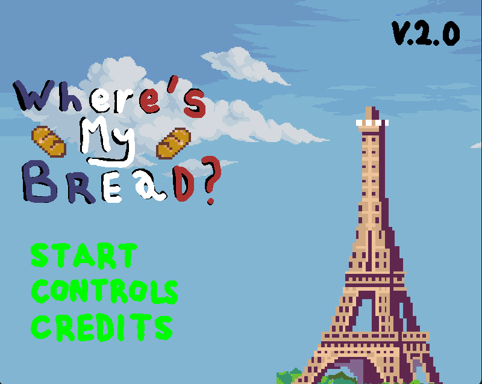
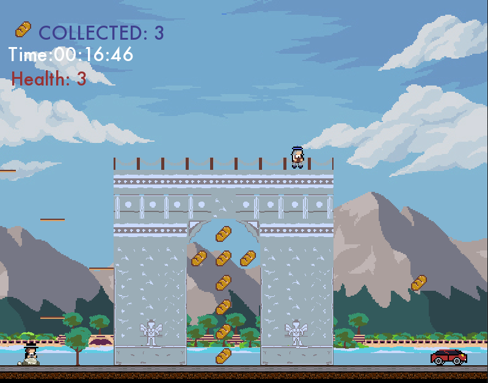

HOW TO PLAY

FOR MAC USERS
1. Start by downloading this file right here, EXE FILE EXE
2. Go to the WineBottler site. It's located at http://winebottler.kronenberg.org/.
3. Click the "WineBottler 1.8-rc4 Development" button.
4. Install WineBottler. To do so, double-click the WineBottler setup file
5. Right click your EXE file and open with Wine
6. Make sure the "Run directly in" option is checked.
7. Click Go and enjoy "Where's My Bread?" !!

FOR WINDOWS USERS
1. Start by downloading this file right here, EXE FILE EXE
2. Double click the downloaded EXE file
3. enjoy "Where's My Bread?" !!
2. Double click the downloaded EXE file
3. enjoy "Where's My Bread?" !!
Version 2.0

September 3rd, 2021